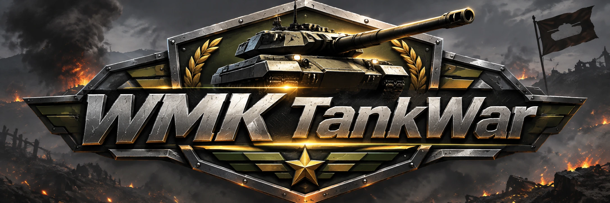

Clique para capturar o mouse e continuar.
Campo experimental 3D. Escolha seu blindado e configure uma partida contra bots.
W/S avançar/recuar · A/D girar · Mouse horizontal/Q/E girar torre · mouse vertical elevação · Espaço/clique disparar · F6 sensibilidade · X zoom (4 níveis) · M mapa · P pausa · Esc libera mouse · clique no campo para recapturar